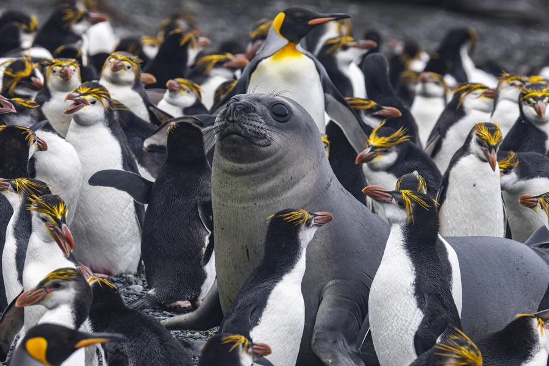

鸟类 · 动物界
王企鹅 Aptenodytes patagonicus

仅次于帝企鹅的大型企鹅，颈侧有鲜艳的橙黄色斑块，繁殖于亚南极岛屿，雏鸟长着棕色绒羽，被称为“企鹅王子”。
- 分类
- 门脊索动物门纲鸟纲目企鹅目科企鹅科属王企鹅属
- 栖息环境
- 亚南极岛屿的海岸和草地，形成大型繁殖群
- 地理分布
- 亚南极岛屿，如南乔治亚岛、福克兰群岛和克罗泽群岛，中国无分布
- 保护级别
- IUCN 无危（LC）；非中国分布物种
物种志
王企鹅体长 85–95 cm，体重 9–15 kg，是体形第二大的企鹅。它的背部、头部和翅膀呈黑色，腹部白色，颈侧和后颈有鲜艳的橙黄色斑块，喙细长而尖。雏鸟全身覆盖棕色绒羽，看起来像一个毛茸茸的棕色大鸟，与成鸟差别很大。
王企鹅繁殖于亚南极的岛屿，如南乔治亚岛、福克兰群岛和克罗泽群岛，常形成大规模的繁殖群。它们以小鱼、乌贼和磷虾为食，能潜入水下数十米捕食。王企鹅的繁殖周期较长，每窝产卵 1 枚，孵化约 54–57 天，育雏期长达数月。由于繁殖地偏远、人类干扰较少，王企鹅目前被列为无危物种；它并非中国分布物种，却是亚南极岛屿上常见的繁殖鸟。
形态与习性
- 食性小鱼、乌贼和磷虾
- 体长85–95 cm
- 体重9–15 kg
- 繁殖每窝 1 枚卵，孵化约 54–57 天
- 特征颈侧有鲜艳的橙黄色斑块，雏鸟长棕色绒羽
- 寿命野外约 20–30 年
趣味知识
- 王企鹅是体形第二大的企鹅，仅次于帝企鹅。
- 它的颈侧有鲜艳的橙黄色斑块，成鸟十分华丽。
- 王企鹅雏鸟长着棕色绒羽，像一只毛茸茸的大鸟，被称为“企鹅王子”。